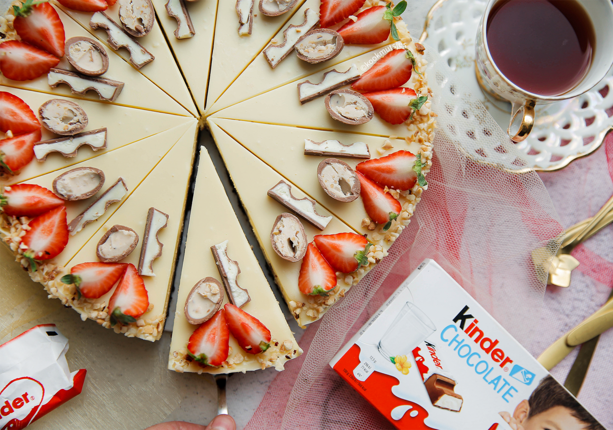

brownie-kinder-cheesecake

Ingredienten
- 125 g roomboter
- 150 g pure chocolade
- 100 g kristalsuiker
- 75 g donkerbruine basterdsuiker
- 16 g vanillesuiker
- 0.2 g zout
- 2 eieren
- 100 g bloem
- 10 g cacaopoeder
Bereiding
- Kook de roomboter samen met de pure chocolade au bain marie.
- Voeg de suiker, donkerbruine basterdsuiker, vanillesuiker en het zout toe. Mix goed.
Voeg de eieren één voor één toe en mix tot een geheel.
Zeef de bloem en het cacaopoeder boven de kom. Spatel tot een geheel.
- Verdeel het beslag over de bakvorm.
Leg de brownie in een voorverwarmde oven op 175 ℃. Bak 20-25 minuten.
- Haal de Kinder chocolade uit de verpakking.
- Doe de roomkaas en suiker in een diepe kom. Mix 1 minuut. Zeef de maïzena boven de kom. Mix goed.
Spatel de eieren één voor één luchtig los (mix niet met een keukenmachine of handmixer).
- Verdeel de Kinder chocolade over de brownie-laag met daarover het cheesecakebeslag. Smeer gelijkmatig uit.
- Leg de brownie-kindercheesecake in een voorverwarmde oven op 125 ℃.
Bak 55-65 minuten of tot de zijkanten van de cheesecake goed stevig zijn en het middengedeelte nog een beetje wiebelt.
Zet daarna de oven uit en laat de brownie-kindercheesecake er 1 uur in liggen.
Dit voorkomt dat de cheesecake inzakt of scheurt.
- Breng de ongeklopte slagroom in een steelpan tot tegen de kook aan.
Haal de steelpan van het vuur en voeg de stukgemaakte witte chocolade toe.
Laat 1 minuut staan. Roer tot een gladde massa.
- Verdeel de witte chocolade ganache over de cheesecake en laat, afgedekt, opstijven in de koelkast. Het liefst een nachtje.
- Snijd de cheesecake in mooie puntjes. Garneer met aardbeien, chocolade en nootjes.